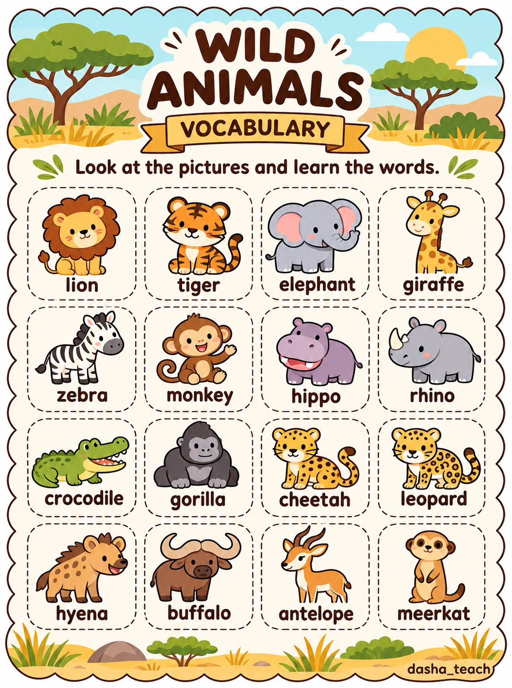
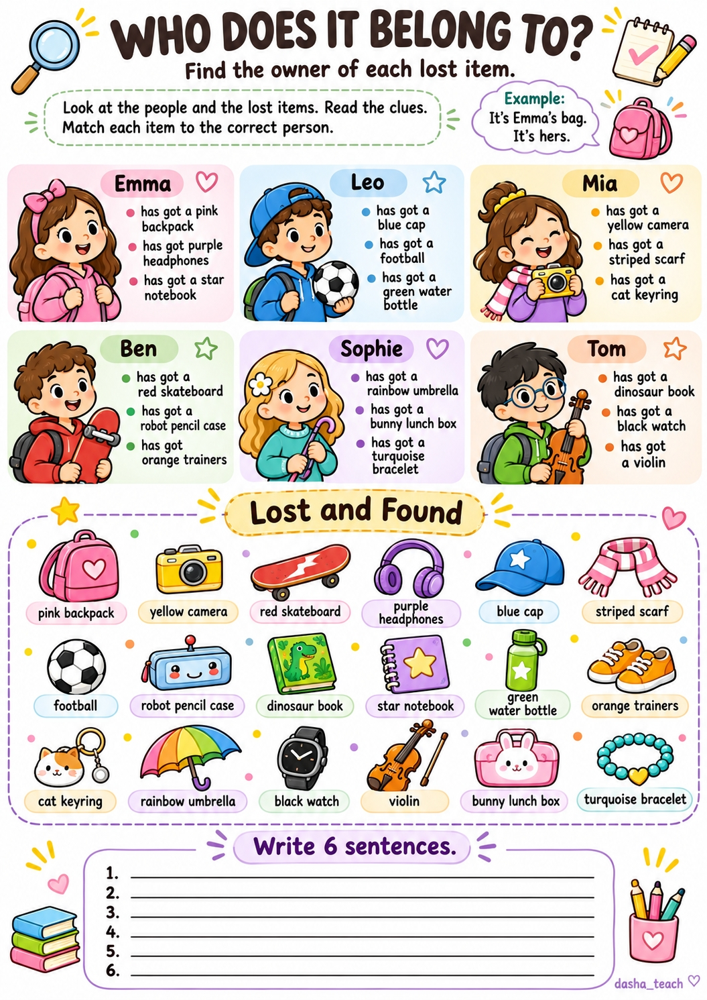
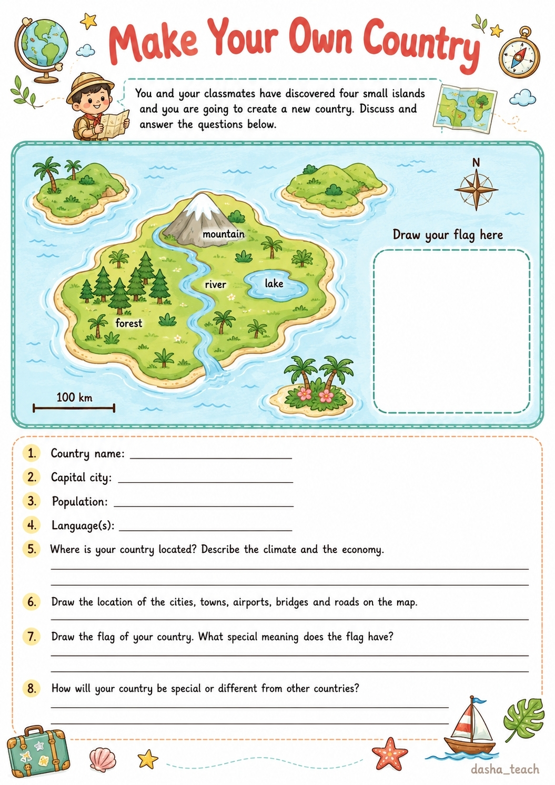

Онлайн и офлайн
Показывайте на экране, отправляйте ученикам или распечатывайте для работы на занятии.
Курс по созданию учебных материалов с помощью нейросетей. Делайте рабочие листы, карточки и задания, которые подходят именно вашему уроку.

Готовая разработка слишком детская, сложная или не подходит визуально? Научитесь создавать материал под свою задачу, а не подстраивать урок под найденный файл.
Показывайте на экране, отправляйте ученикам или распечатывайте для работы на занятии.
Создавайте точечную практику, парные задания, обсуждения и проекты.
Используйте навыки для личных занятий, блога и разработки авторских материалов на продажу.
От знакомства с лексикой до творческого проекта. Откройте каждый лист в полном размере, чтобы рассмотреть задания.

Наглядный словарь с 16 дикими животными для знакомства со словами и повторения.
Рассмотреть лист
Найдите владельцев предметов по подсказкам и составьте предложения о принадлежности.
Рассмотреть лист
Придумайте страну: обсудите её название, население и особенности, нарисуйте флаг и дополните карту.
Рассмотреть листОт учебной цели и структуры задания до визуального оформления и доработки результата.
Цель, уровень, инструкция, логика задания, читаемость и баланс текста с иллюстрациями.
Почему результат зависит от формулировок и как задавать понятные ориентиры.
Запрос под конкретную тему, возраст, уровень, формат занятия и учебную цель.
От cartoon и kawaii до минимализма, журнального оформления, комикса и travel journal.
Vocabulary, grammar, reading, speaking, CLIL, critical thinking, проекты и творчество.
Как замечать слабые места и уточнять запрос, чтобы улучшать содержание и оформление.
Учитесь создавать своё и уже берите готовое в работу.
Материалы для разных уровней и возрастов распределены по папкам — от языковой практики до творчества и проектов.
Библиотека входит в оба тарифа Prompt to Print.
На курсе вы учитесь составлять запросы самостоятельно. А конструкторы помогают собрать параметры будущего материала и ничего не забыть.
В тарифе без обратной связи: помогает быстро составить запрос для рабочего листа.
В тарифе с обратной связью: больше настроек категории, возраста, формата, уровня, языка, объёма и визуального стиля.
Полная программа входит в каждый тариф.
Оплата откроется на Payform. Ссылка на курс придёт на указанный при оплате email в течение 5–10 минут. Проверьте папку «Спам». Доступна покупка из разных стран.
Да. Обучение начинается с понимания учебного материала и структуры запроса. Конструктор помогает начать, но курс также учит составлять промпты самостоятельно.
Нет. Их можно демонстрировать на экране, отправлять ученикам, использовать в домашних заданиях, индивидуальной, парной и групповой работе.
Большинство примеров и подарочная библиотека посвящены английскому. Принципы создания материалов можно использовать и для других иностранных языков.
Да, библиотека идёт в подарок к курсу в обоих тарифах. Внутри — грамматика, лексика, чтение, фоника, speaking, writing, CLIL и другие категории.
Курс помогает освоить создание собственных материалов в том числе для продажи. Это не означает передачу права перепродавать подарочную библиотеку курса.
На email, указанный при оплате, в течение 5–10 минут. Проверьте папку «Спам».
Интересуют интерактивные игры? Посмотрите Prompt to Game.